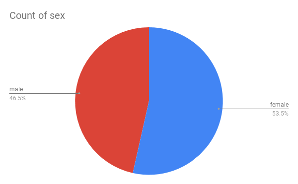
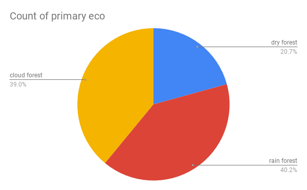
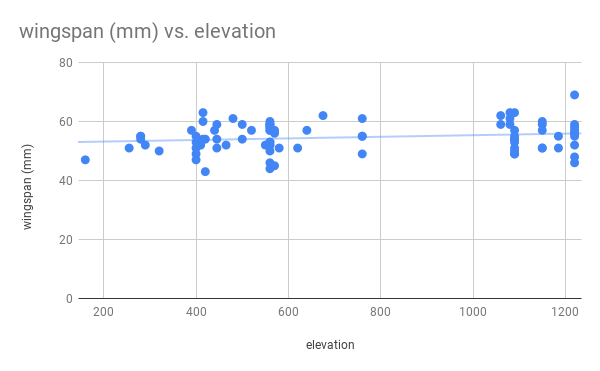
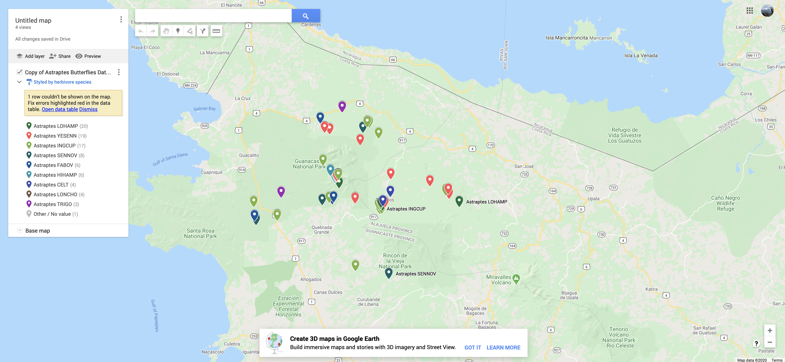
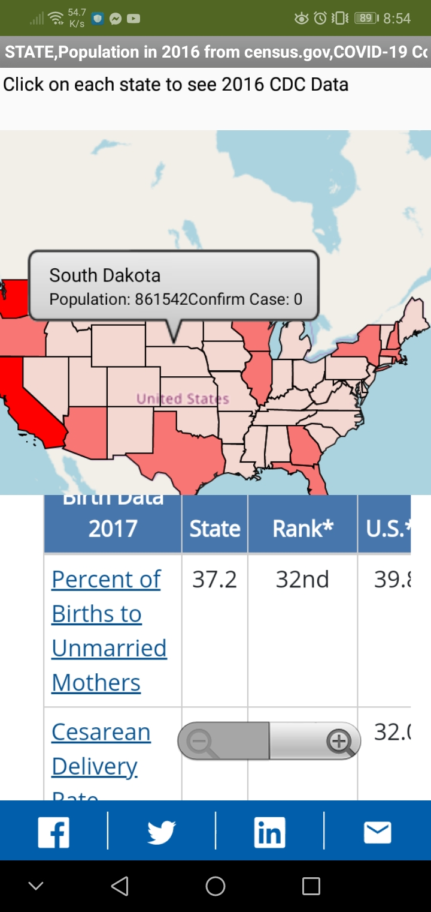

Chapter 7 Questions
Unit 7.2
1. Choose one of the data sets listed above in the Activity section or one that you find on your own and give a brief description of it. What specifically were the types of data (text, sounds, transactions, etc.) included in the data set you chose?
The data set was a visual set of data that shows temperatures of cities throughout time. The data shows a visualiation of data.
2. What new facts did you learn when exploring the data set? List at least 3 facts.
New facts that I learned from exploring data sets are the temperatures of citites are warmer during the summer, San Francisco has very little temperature change throughout the year, citites in different hemispheres have different times where temperature changes.
3. Write a question you have about the data set you chose. Now, convert that question into a hypothesis (a statement) with your prediction about the data.
The closer a city is to the coast, the more stabe the temperature is thrughout the year.
4. Identify at least one security and/or privacy concern that is associated with the data in the data set you chose?
A privacy concern is that the temperatures of the city is being revealed to the public.
5. If your data set included a visualization, explain the purpose of the visualization. How would you change or improve the visualization? If it did not include a visualization, describe one that you think would be useful in understanding the data.
The purpose of the visualization is to help the user see the temperature difference throughout the year and from the past. I could change the visualization by making the line thinner.
Unit 7.3
1. (Activity 2) Write a spreadsheet formula that calculates the average elevation for the data in this spreadsheet. Write your formula and the result found in your portfolio.
=AVERAGE(J2:J88) 733.1609195
2. (Activity 2) Are there more male or female butterflies in this data set? Include a screenshot of your chart to answer this question. What kind of data is in your chart?
There are more females than males in the butterfly data set.
3. (Activity 2) Which ecological environment (primary eco column) do these butterflies like to live in? There is no clear winner in this question so give the percentages in each ecological environment in a screenshot of your chart. What kind of data is in your chart?
The butterflies like rainforests the mosts with 40.2% while cloud forests have 39% and dry forests have 20%.
4. (Activity 2) Come up with a 3rd question and use charting to answer it. Include the screenshot. What kind of data is in your chart?
Does the elevation affect wingspan? Yes it does
5. (Activity 3) Include a screenshot and link of the map you created for this data.
Unit 7.4
1. Which data set did you select and why did you choose it?
A data set we chose was the music artists data set because we liked music.
2. Summarize the data included, being specific about the types of data (text, sounds, transactions, etc.) included. Make sure you list the title and the website (URL) where you found the data.
The data sets include information about the artists and the types of music that they release. https://think.cs.vt.edu/corgis/csv/music/ Music CSV File
3. List your 3-5 hypotheses and the data visualizations that you created for each. (Include the visualizations as images on your portfolio or provide a link to them shared with your instructor.)
The hypotheses are European Artists like rock and metal, The more familiar the artist is, the hotter their songs are, Louder music tends to be less popular, and The newer the song the faster the tempo Link to the visualizations
4. Explain how collaborating with a partner helped you gain new insight or knowledge about the data.
Collaborating with a partner allowed me to find patterns in the data that I otherwise would not have gotten.
5. Identify at least one security and/or privacy concern that is associated with the data in the data set you chose.
Privacy concern about the artists music dataset is the location that each artist is from which can be traced.
Unit 7.5
1. How and why are files used as a data abstraction in this app?
The files are used as a data abstraction in the app by containing information to display polygons for sates.
2. Explain the List of Lists data abstraction used in this app.
The list of lists allows the map to create a visualization of a state with the lists within it.
3. When and why do programmers use APIs?
†he apis are used by programmers because they contain a lot of information for them to use.
4. Provide screenshots of your enhancement projects. (At least ONE and TWO)
Unit 7.7
1. In the Teachable Machine activity, what inputs were easy for the program to learn to distinguish and what inputs were more difficult?
Outputs that were easy to distinguish were hand motions, but they became more difficult when ot was the left or right hand.
2. Search online and identify another application area for AI or machine learning besides the ones described in this lesson. Is this task hard easy for humans but hard for computers to do?
Machine learning can be used for spotting predators online through text messages and background data. This tasks is easy for computers but hard for humans because humans cannot see who is behind the screen while the computer can identify the user with the data available.
3. In this lesson you saw some examples of gender bias in a machine translation program. Identify another form of unconscious bias and give an example of how it could affect a computer program. Explain how that could be a harmful effect on society, economy, or culture.
Another form of computer bias is who is seen as a posible criminal and that may lead to computers identifying certain people as criminals.
Unit 7.8
1. In your own words, define the concept of copyright. Why should all Internet users be aware of copyrighted material?
Copyright is the protection of works that people make from people who want to take the information for themselves. All internet users should be aware of the copyrighted materials so they don't break the law on accident.
2. What is the difference between digital and printed documents that makes it easier to violate copyright law with digital ones?
digital documents are online while printed documents are real and tangible. Because digital documents are online, they can be spread easily very quickly.
3. What is a peer-to-peer architecture? Provide an example of at least one well-known peer-to-peer network.
Peer to peer architecture is where peers are able to share to each other their data and connect to each other. A well known peer to peer network is Hamachi.
4. What is the DMCA and why is it significant to copyright, especially with regards to electronic works (documents, images, videos, etc.)?
The DMCA is a law that protects copyrights online. This allows online works to have the same copright protection has regular works.
5. What are Open Access and Creative Commons? How have they impacted the sharing of digital information?
You can share information without copyright infringment. This has promoted digial sharing.
6. The Blown to Bits book is released under a Creative Commons (CC) license, specifically the Attribution-NonCommercial-ShareAlike 3.0 license. What does this license allow people other than the authors to do? What is the relationship between the original Blown to Bits book and the newer, Blown to Bits (version 2.0) book? Did the authors of the newer version stay true to the CC license? How can you tell? (Optional) If your favorite book or movie was released with a CC license, how would you change it?
The liscens allows people other than the authors to share the information but not for commercial use. The new blown to bits has the same liscense but is not for comercial use.
7. The chapter describes three peer-to-peer networks, each of which can be used to share copyrighted works illegally. Why did the courts find that Napster and Grokster were liable for the illegal activities of it's users, while BitTorrent is not?
The data for napster and grokster are concentrated which leads to the sources being tracked down.
8. What effect have streaming services such as Netflix and Spotify had on illegal downloading activities?
Streaming services has lowered the amount of illegal downloading activities.
9. Why was it important for Jack Andraka to have access to research articles? In general, how has access to information helped to identify problems, develop solutions, and disseminate results?
jack Andraka's access to research articles are important so he can take the information and use it for his research. Access to information helps identify problems as they allow more users to check the information.
10. What is your responsibility as an app developer in regards to the fair use of copyrighted works such as images and music? Give one example use of a copyrighted work in an app that follows fair use guidelines and one example that violates fair use guidelines.
As a app developer, you should cite the copyrighted works that you use and give them credit. Using a song in a movie follows guidelines as it has mostly their own work in it and just a bit a copyrighted information within.
11. In your opinion, are YouTube users violating copyright terms when they make lyric videos? Why or why not?
Youtube does not violate copyright terms because the work is used for educational purposes to teach users the lyrics for the songs.